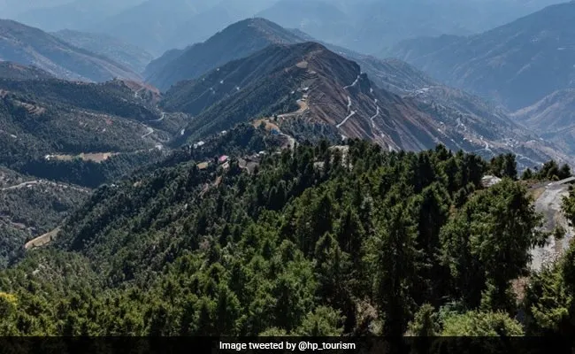

Places to visit
Himachal Pradesh has various visitor attractions including within the city.
Himachal Pradesh

Manali
ManaliKullu-Manali is one of the highly-recommended places to visit in Himachal Pradesh. If you are on the lookout for fresh air and green mountains amidst the snow-covered ranges, then Kullu-Manali indeed should be at the top of your list. Solang Valley in Manali during snowfall gives you a chance at skiing and many more such adventure sports. While Kullu on the other hand promises you river-rafting, camping and trekking.

Shimla
ShimlaShimla gives you glimpse of British sophistication in Indian soil. The architecture of the old buildings tells you a lot about the history of this place. Also known as the queen of hills, Shimla used to be colonial capital before Independence. That would explain the British influence in the architecture of the buildings. To understand the British influence, you can visit the Viceregal Lodge – one of the best places to visit in Shimla

Dharamshala
DharamshalaDharamshala definitely has to be on your list of the best Himachal Pradesh destinations. Famous not only because of its climate but also because you get to see how the multicultural Indian community lives in harmony with the Indo-Tibetan community. This place is very important for the Buddhists as it has several monasteries. Take a moment to sit, relax and meditate. Meanwhile, one can enjoy a boat ride across the Dal Lake and admire the royal Kangra Fort. Apart from the monasteries, it is home of the Dalai Lama hence visiting the Dalai Lama Temple complex is a must!

Kasauli
KasauliKasauli is a perfect getaway from the hustle and bustle of the city and is one of the most serene places to visit in Himachal in June. Almost on the outskirts of Punjab and Haryana, it is well connected by roadways. Start your trip with blessings from the very old Anglican Church which was built in the British Era. Followed by a trek on the lower mall which leads to the Monkey Point, in the shape of Lord Hanuman’s foot.

Bir Billing
Bir BillingBir Billing is the mecca for adventure sports and it has to be on your list of the top Himachal Pradesh tourist places. Bir is a small village which is located on the western side of Himachal Pradesh and is blessed with a refreshing climate. To experience some adrenaline rush, paraglide in the beautiful Himalayan valleys and camp under skies full of stars. Explore the gorgeous Buddhist monasteries in Bhattu, Choggan, and Chauntra Bhattu colony located in the center of the forest. Meditating here is so peaceful and quiet that you can hear your own thoughts.

Dalhousie
DalhousieDalhousie is yet another hill station in Himachal Pradesh which is ideal for de-stressing in the serene, tranquil troposphere. Away from the hustle-bustle of city life, sit back and enjoy nature in Dalhousie, one of the top Himachal Pradesh tourist places. Start your trip with the evergreen valley of Khajjiar, also known as the Switzerland of India. If you love walks and nature then take a long walk in Dainkund Walk, Ganji Pahadi Walk, and Bakrota Walk.

Spiti Valley
Spiti ValleySpiti Valley is one of the most attractive hidden gems of North India. Straddling the river Spiti, it is home to numerous of the most divine of Buddhist destinations as well as some of the most widespread tourist destinations. Some monasteries that you can visit – Millennium Monastery, Dhankar Monastery, etc. You can also visit Gue Mummy, which is a 500 year-old mummy of a Buddhist monk. Meanwhile, you can take a hike at traditional meditation centre at Lari Dupuk. Admire the rock carvings at Tabo Monastery – one of the places to visit in Spiti Valley and appreciate its craftsmanship.

Kasol
KasolKasol is known as the little Israel of India in Himachal Pradesh, based in the Parvati Valley. It’s just on the way to the holy town of Manikaran and is the best hill station in Himachal. Kasol is ideal for hiking in the jungle, so unleash your active self and go trekking at Parvati Valley (also known as the ‘Stoner’s Paradise’).Trek to Kheerganga, beat the cold and take a dip in the hot water spring.

Palampur
PalampurPalampur is famed for its tea gardens and zoo, it is listed among offbeat places of Himachal. This is an ideal place to visit with family, as children and parents will find many attractions equally interesting. You can go for a slow paced trek, while also visiting the local villages in the area. The locals are as welcoming as they come. Visit the local zoo and spot your favorite animals.

Chamba
ChambaChamba is a small Himalayan town that is known for its pristine beauty and solitude amidst the Himalayas. The town is famous for its temples and caves which are also a major tourist attraction of this town and is known to be one of the best tourist places in Himachal Pradesh.Chamba offers splendid views of the Pir Panjal range, Zanskar, and Dhauladhar range in the backdrop. You can make a stop at the Bhuri Singh Museum – one of the places to visit in Chamba, which is an interesting place to learn about the culture and tradition of Chamba. Followed by blessings from Champavati Temple and Sui Mata Temple.